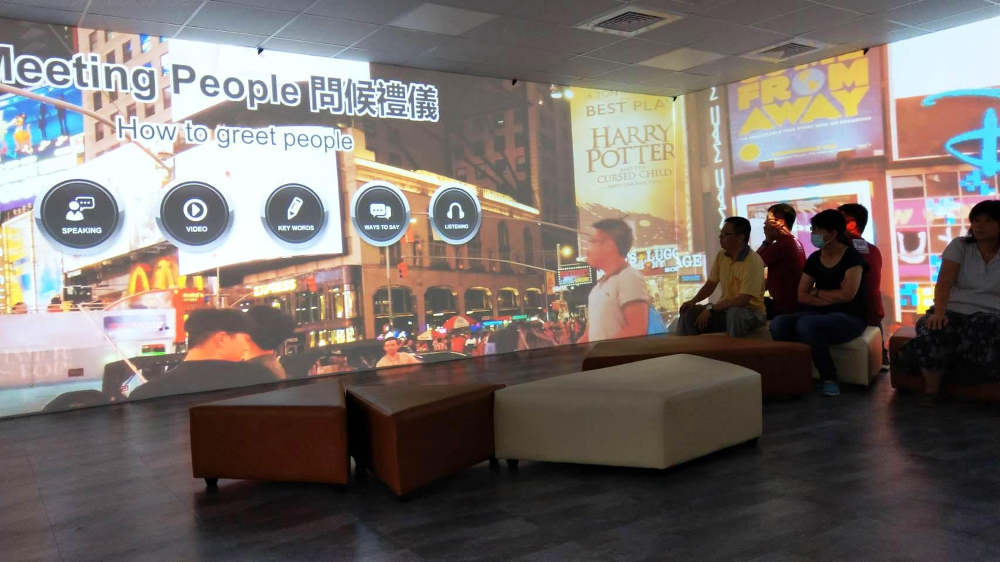
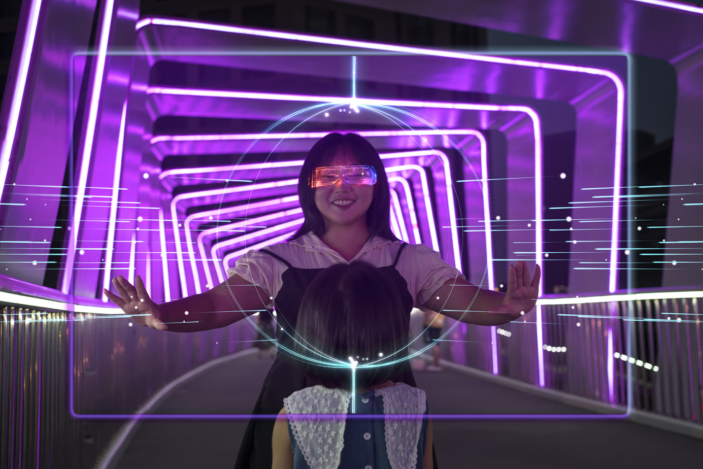
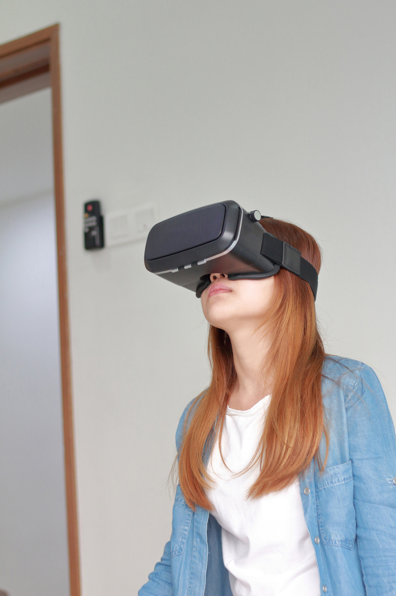
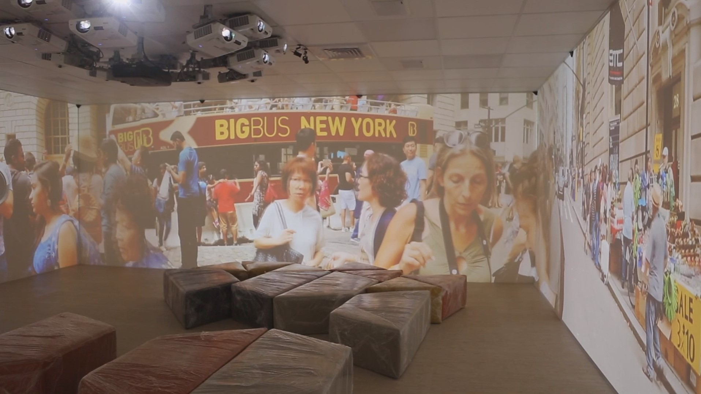
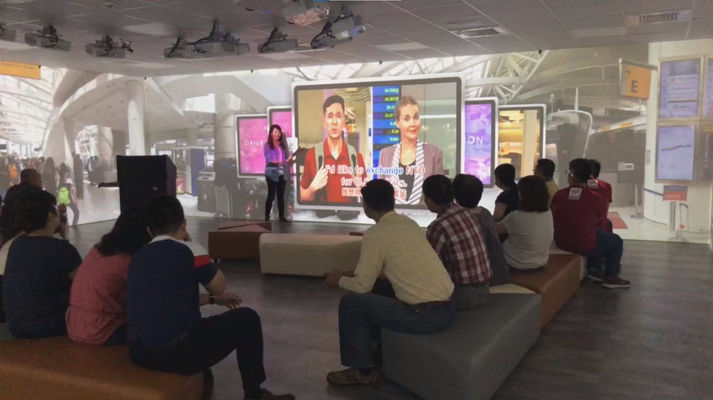
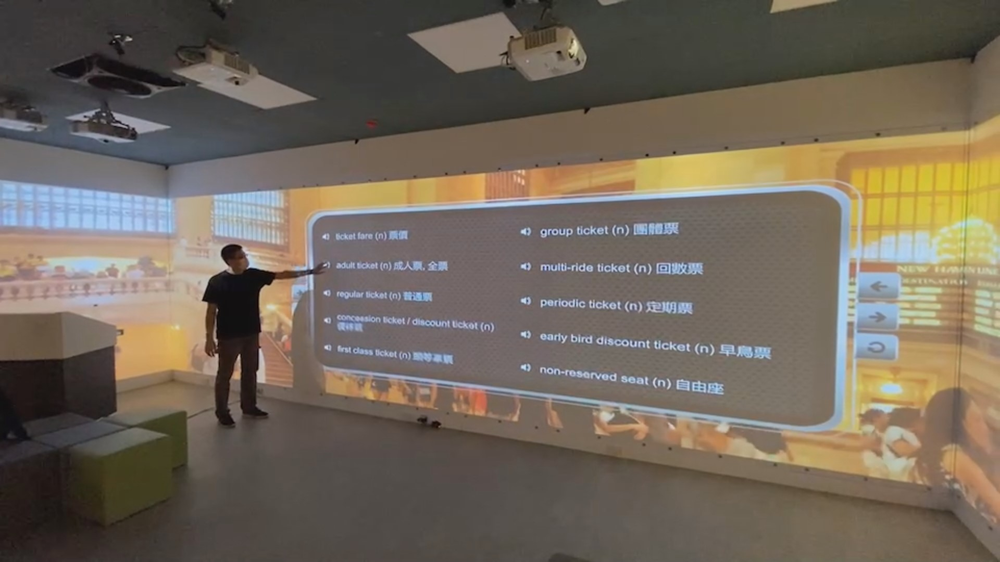
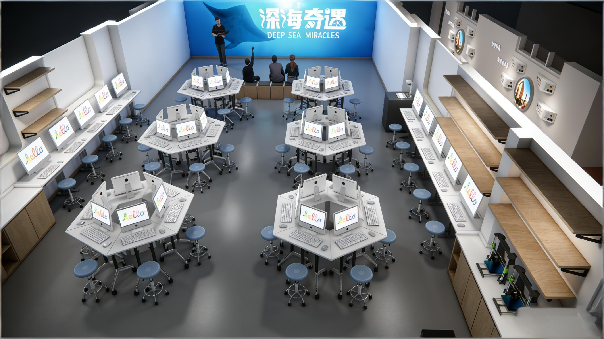

教学应用场景
Teaching Scenarios
空间的生命力在于应用。以下是各学科的典型应用场景示例，展示不同学科的老师如何在这个空间里开展教学。

古诗意境沉浸课
适用内容：小学古诗教学（如《小池》《望庐山瀑布》《江南春》等）
教学过程
入境（3分钟）
三面墙缓缓呈现古诗的意境——泉水、细流、树荫、小荷、蜻蜓……学生仿佛站在池塘边。
品读（10分钟）
老师引导学生观察画面中的景物，对照诗句理解词义。点击画面中的景物，会出现对应的诗句和解释。
体验（10分钟）
学生可以"走进"画面——拖拽蜻蜓到荷叶上，拨动水面泛起涟漪，感受诗中的动态美。
表达（7分钟）
学生用自己的话描述诗中的画面，或者尝试仿写诗句。
教育价值：古诗教学的难点在于"意境"——学生很难通过文字想象出诗中的画面。沉浸式空间让学生"走进"诗里，用眼睛看、用身体感受，真正理解什么是"诗中有画，画中有诗"。
汉字起源探秘
适用内容：汉字识字教学、汉字文化启蒙
学生"走进"一条古色古香的街道，两旁是各种商铺——米店、水井、弓箭铺、马车坊……每个商铺的招牌上都有对应的象形字。学生点击商铺，就能看到这个字从甲骨文到金文、小篆、楷书的演变过程，还可以动手"写一写"。

深海奇遇
适用内容：海洋生物、生态系统
教学过程
潜入（3分钟）
三面墙从海面缓缓下潜，光线逐渐变暗，周围出现各种海洋生物——小鱼群从身边游过，海龟慢悠悠地划过。
探索（12分钟）
学生可以"游"到不同的海洋生物身边，点击查看它们的名称、习性、特点。从浅海的珊瑚礁到深海的热泉口。
互动（8分钟）
学生可以参与互动任务——帮助小丑鱼找到海葵家园，观察鲸鱼的迁徙路线，数一数珊瑚礁上有多少种生物。
分享（5分钟）
学生分享自己印象最深的海洋生物，讨论我们能为保护海洋做什么。
教育价值：海洋对学生来说既熟悉又陌生。沉浸式空间让学生"潜"入海底，亲眼看见、亲身体验，对海洋生物和生态系统的理解自然就深刻了。

人体探秘
适用内容：人体生理、健康知识
学生可以点击选择人体不同部位，逐层深入查看对应的3D器官结构和功能介绍，从皮肤到肌肉、从骨骼到内脏，像拆解一个立体拼图一样认识自己的身体。

AI 历史长廊
学科结合：信息科技 + 历史 + 科学
三块触摸屏拼接成贯通的时间长卷，左右滑动即可浏览AI从诞生至今的完整历程。从达特茅斯会议的诞生，到专家系统的兴衰，从深度学习的突破，到大模型时代的到来。
- 长卷式时间轴：三屏拼接成贯通的时间长河，左右滑动浏览AI完整历程
- 里程碑点选：点击关键节点，弹出人物故事、技术原理、时代影响的详情卡片
- 跨屏分阶段：三屏分别呈现"起源→发展→大模型时代"三个阶段
- AI语音讲解：每个里程碑都配有AI语音讲解，讲述背后的故事与意义
教育价值：把"AI是什么、从哪来"讲给学生听——它不是凭空出现的魔法，而是几代科学家一步步探索出来的。
千里江山图
适用内容：宋代历史、古代艺术、传统文化
三面墙展开一幅动态的《千里江山图》——青绿山水之间，有渔人在江上捕鱼，有文人在山间行走，有村舍炊烟袅袅。学生可以"走"进画里，近距离观察宋代人的生活场景。
这既是美术课（欣赏青绿山水），也是语文课（诵读相关诗词），也是历史课（了解宋代社会）——一幅画，串起多个学科。

梵高艺术之旅
适用内容：西方艺术鉴赏、色彩与笔触
学生"走进"梵高的画里——在《星月夜》中，星星在头顶旋转；在《向日葵》前，近距离观察每一笔笔触；在阿尔勒的卧室里，感受画家的生活……
艺术不再是挂在墙上遥不可及的作品，而是学生可以走进去的世界。

非遗工艺体验
适用内容：传统文化、手工技艺
以编织为例：学生来到传统编织工坊，看匠人如何操作织布机。然后学生可以在墙面上"动手"编织——选择纱线颜色，操作经纬，体验"一上一下"的编织规律，设计自己的图案。
类似的还有：篆刻体验、剪纸体验、拓印体验、陶艺体验……

丝绸之路大冒险
涉及学科：语文+历史+地理+美术+音乐
这是一个跨学科主题项目。学生组成商队，从长安出发，沿着丝绸之路一路向西——
历史
了解丝绸之路的历史背景和重要人物
地理
认识沿途的地形地貌、气候特点
语文
学习相关的古诗词和散文
美术
设计自己的商队旗帜，绘制敦煌风格的图案
音乐
聆听和学习西域音乐
整个学习过程以"商队冒险"的游戏化方式推进，学生在完成任务的过程中，自然地融合了多个学科的知识。
跨学科的本质：不是把几个学科的知识简单拼凑在一起，而是围绕一个真实的主题或问题，让学生自然而然地运用多个学科的知识和方法去探究和解决。

AI 数字人互动 —— 校园智慧大脑的第一张面孔
在空间大屏上，学校专属的IP数字人静静伫立，成为师生进入沉浸式空间遇到的"第一个人"。它不是一个只会说话的虚拟形象，而是校园智慧大脑的可视化界面。
三种交互方式
主动迎宾
有人走近时，数字人会主动打招呼，欢迎来到沉浸式学习空间，并简要介绍空间的功能和今日推荐内容
导览动线
点击"带我参观"，数字人会引导师生了解空间的各个功能区域和使用方法
自由提问
师生可以随意提问，数字人根据问题类型智能应答